Tourism & Trip Planning
Explore Arusha & the Northern CircuitEden Heights Villa also offers tourism services. We help plan trips to nearby places across Arusha’s Northern Circuit — national parks, wildlife sanctuaries, mountains, lakes, waterfalls, and cultural heritage sites.
Northern Circuit National Parks
Day trips, safaris & wildlife experiences

Arusha National Park
Includes Mount Meru, Momella Lakes, and Ngurdoto Crater. Perfect for day trips, walking safaris, and viewing black-and-white colobus monkeys.
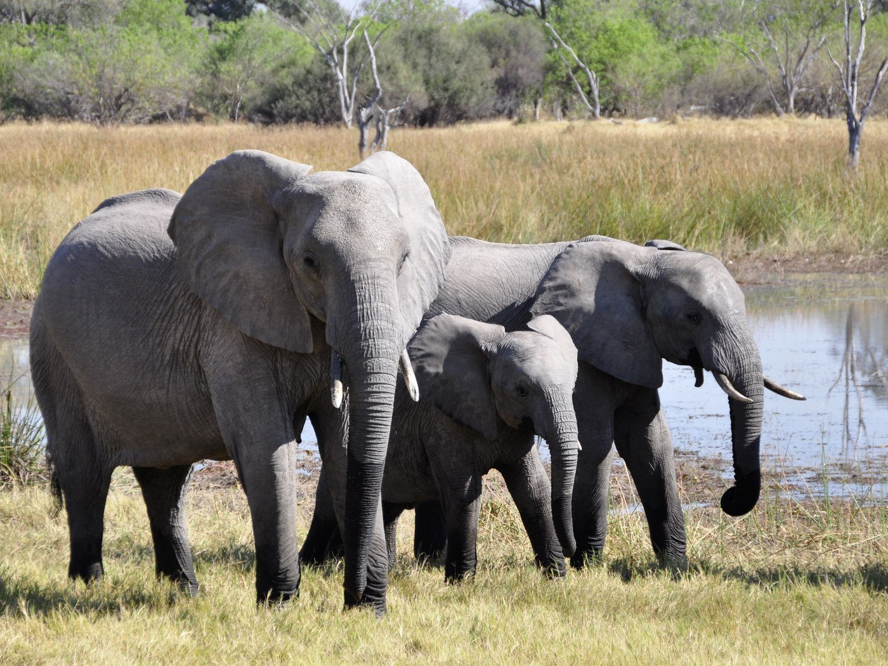
Tarangire National Park
Centered around the Tarangire River. Celebrated for its massive elephant populations, iconic baobab trees, and excellent dry-season birdwatching.
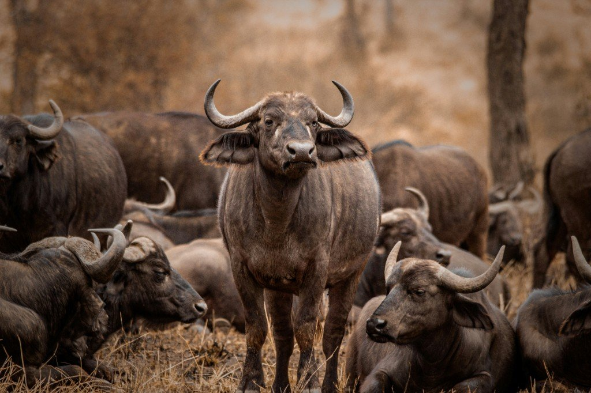
Lake Manyara National Park
Located at the base of the Great Rift Valley. Famous for its unique tree-climbing lions, dense underground water forests, and seasonal pink flamingos.
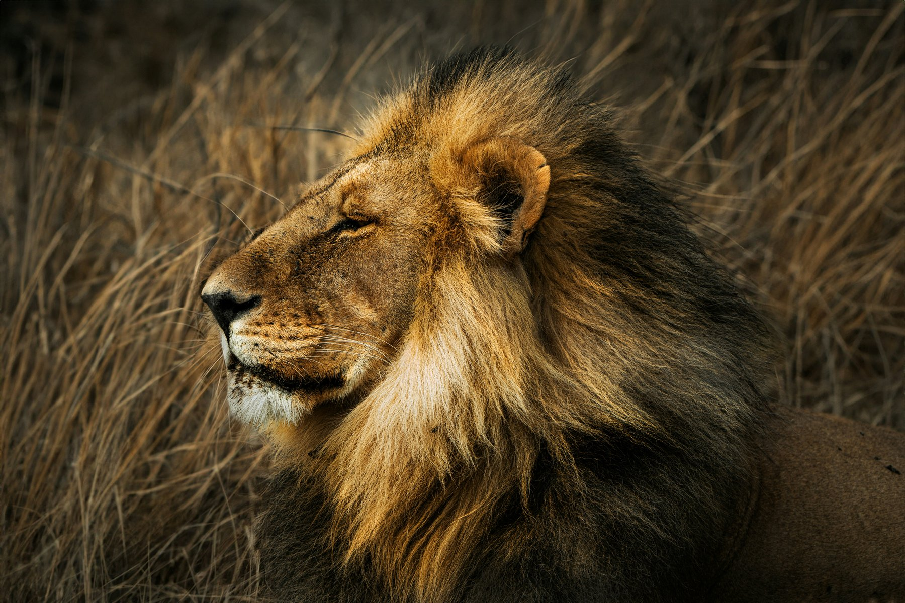
Serengeti National Park
A vast savanna stretching to the Kenyan border. Famous for the annual Great Migration of over a million wildebeest and abundant apex predators.
Wildlife and Conservation Areas
Sanctuaries & protected landscapes
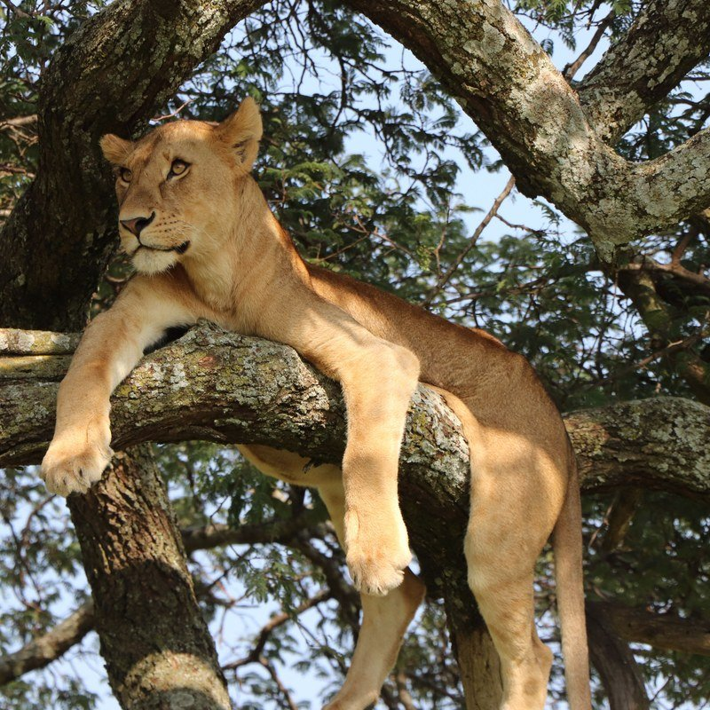
Ngorongoro Conservation Area
A protected UNESCO World Heritage site. Houses the world’s largest intact volcanic caldera, creating a natural enclosure for the “Big Five.”
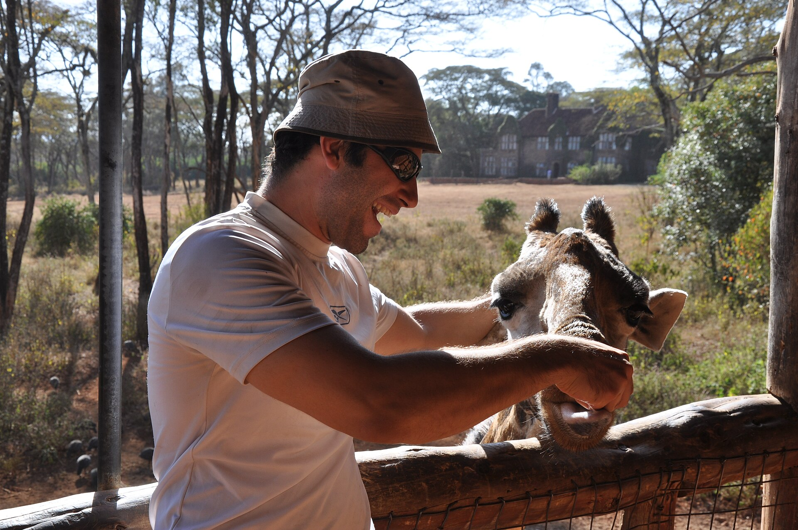
Serval Wildlife
A private eco-tourism lodge and wildlife sanctuary in the Siha district. Visitors can interact closely with habituated giraffes, elands, and ostriches.
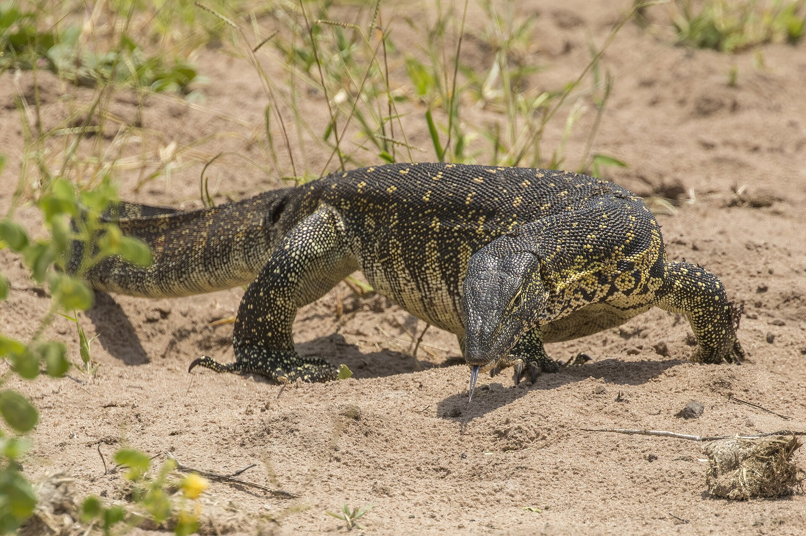
Arusha Wildlife Sanctuary (Meserani Snake Park)
Situated just west of Arusha. Provides guided tours of reptiles, a Maasai cultural museum, and camel rides.
Mountains and Hiking
Treks, peaks & volcano climbs
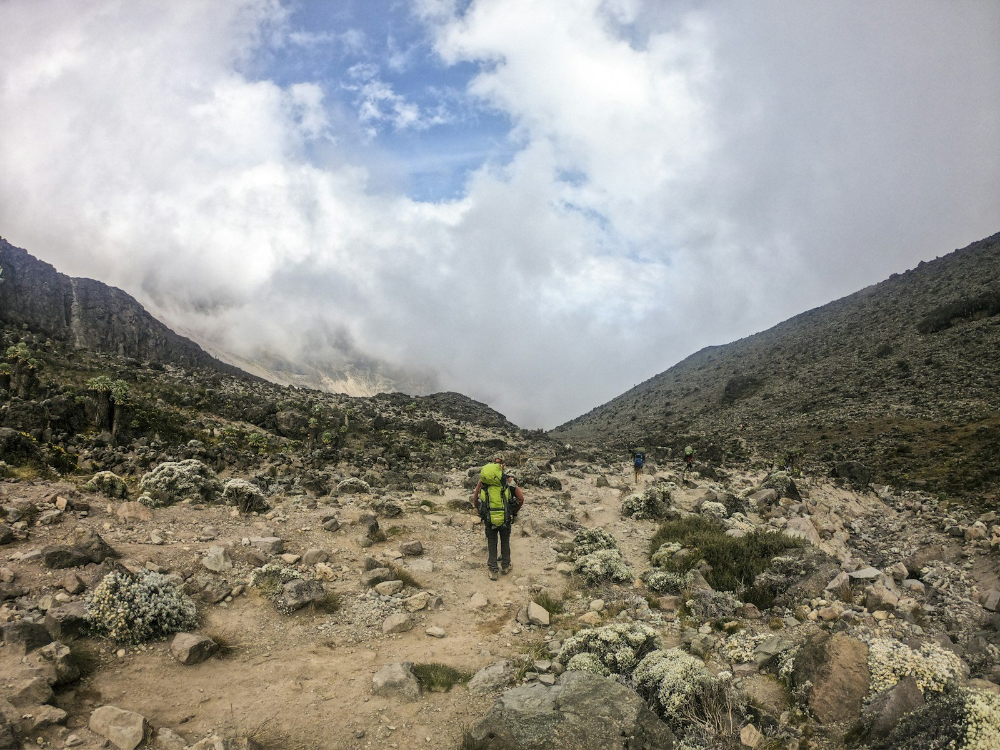
Mount Kilimanjaro National Park
Home to Africa’s highest peak at 5,895 meters. Offers multi-day trekking routes, alpine deserts, and permanent glaciers.
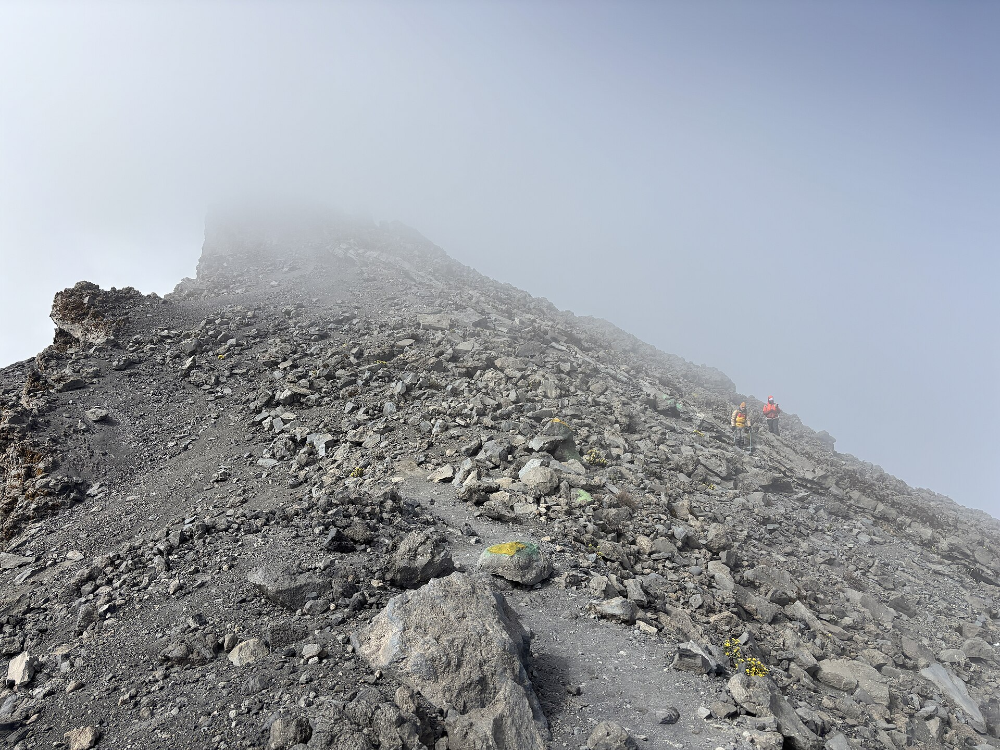
Mount Meru
Tanzania’s second-highest mountain at 4,562 meters. A challenging four-day trek or an ideal warm-up climb for Kilimanjaro.
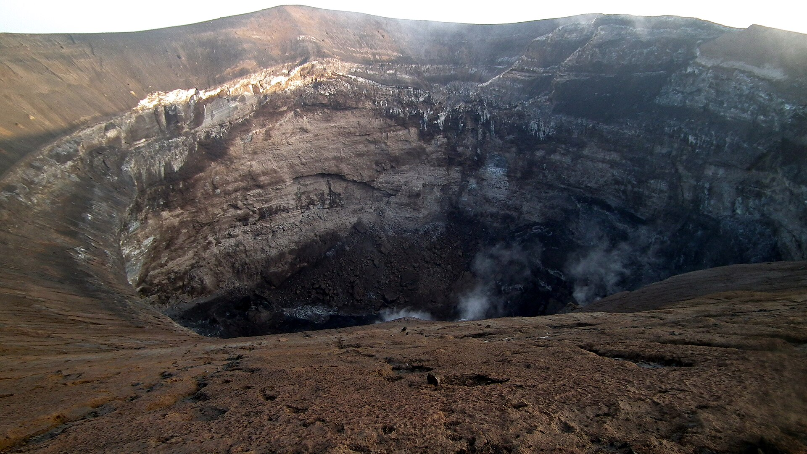
Ol Doinyo Lengai
An active volcano in the Gregory Rift south of Lake Natron. Known to the Maasai as the “Mountain of God,” with strenuous overnight climbs to view glowing lava.
Lakes and Waterfalls
Canoeing, flamingos & hot springs
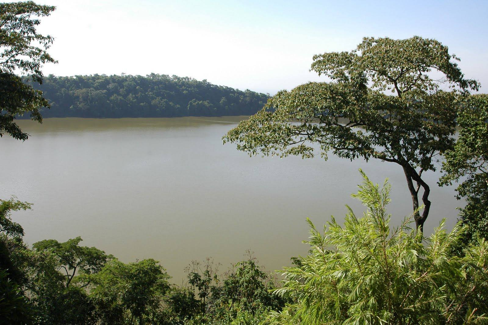
Lake Duluti
A deep volcanic crater lake on the eastern outskirts of Arusha. Shaded by thick forest walls — a peaceful hub for canoeing and spotting reptiles.
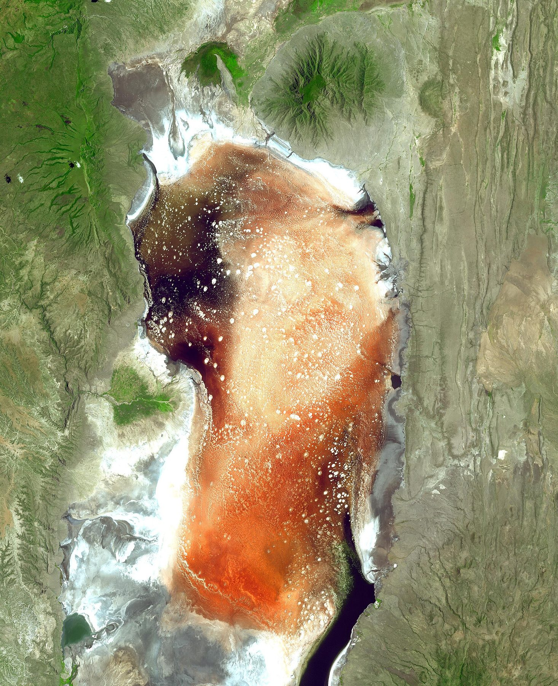
Lake Natron
A shallow, highly alkaline salt lake in northern Tanzania. The principal breeding ground in East Africa for millions of lesser flamingos.
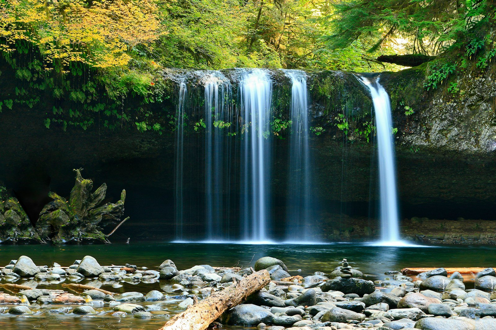
Materuni Waterfalls
A towering 80-meter waterfall in the lush foothills of Mount Kilimanjaro near Moshi. Typically visited alongside local Chagga coffee tours.
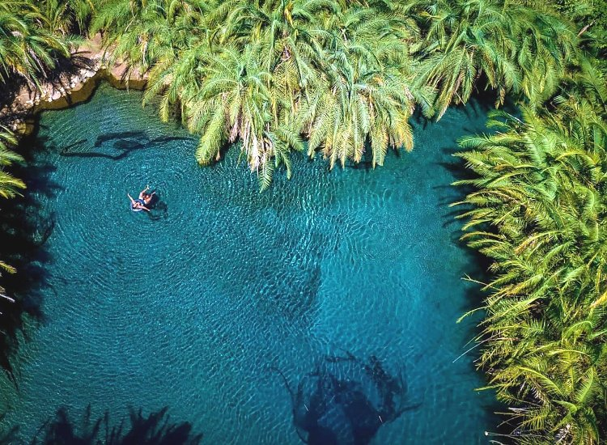
Chemka (Kikuletwa) Hot Springs
A unique geothermal oasis surrounded by fig trees near Moshi. Clear, warm turquoise waters ideal for swimming and relaxing.
Cultural and Heritage Sites
Art, tradition & Maasai culture
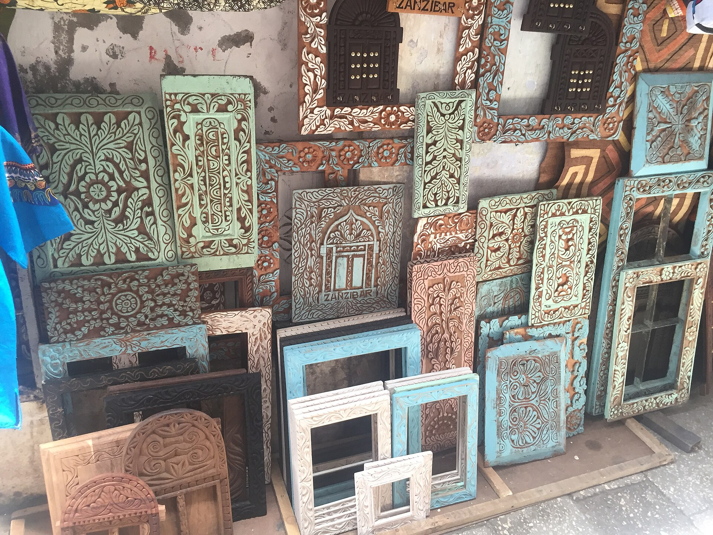
Cultural Heritage Centre
A sprawling art gallery and shopping complex in Arusha, shaped like a traditional drum and shield, showcasing African art, carvings, and gems.
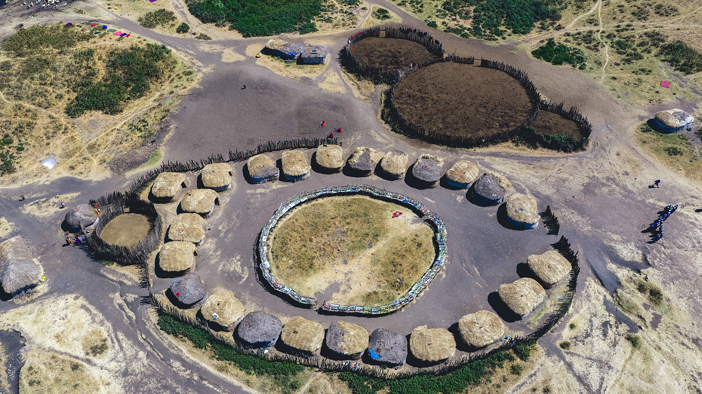
Olpopongi Maasai Cultural Village
A simulated authentic Maasai village in the West Kilimanjaro plains. Offers overnight stays, traditional meals, and insights into Maasai hunting and medicine.
Plan Your Trip With Us
Tell us where you’d like to go — we arrange tourism experiences alongside your villa stay and transport. Contact Elisheba Chelesi (074506244) or Goodluck Swai (0745500519), or email echelesi@gmail.com.